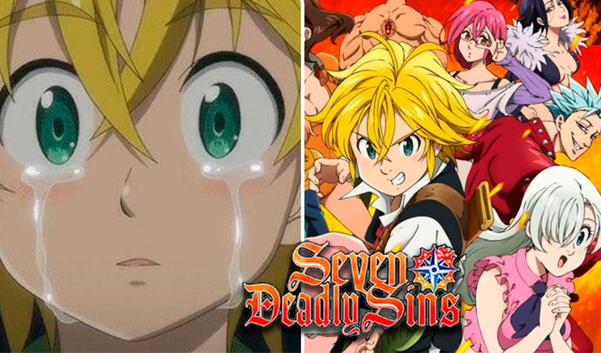
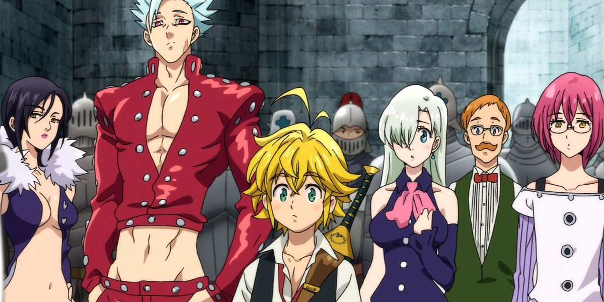
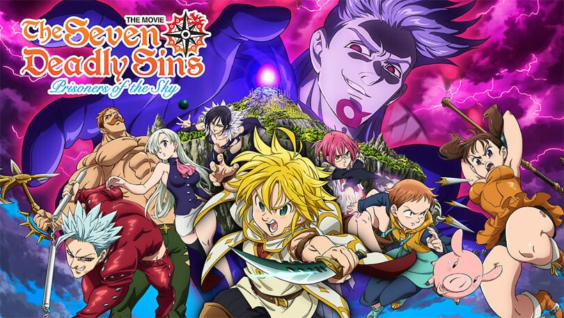
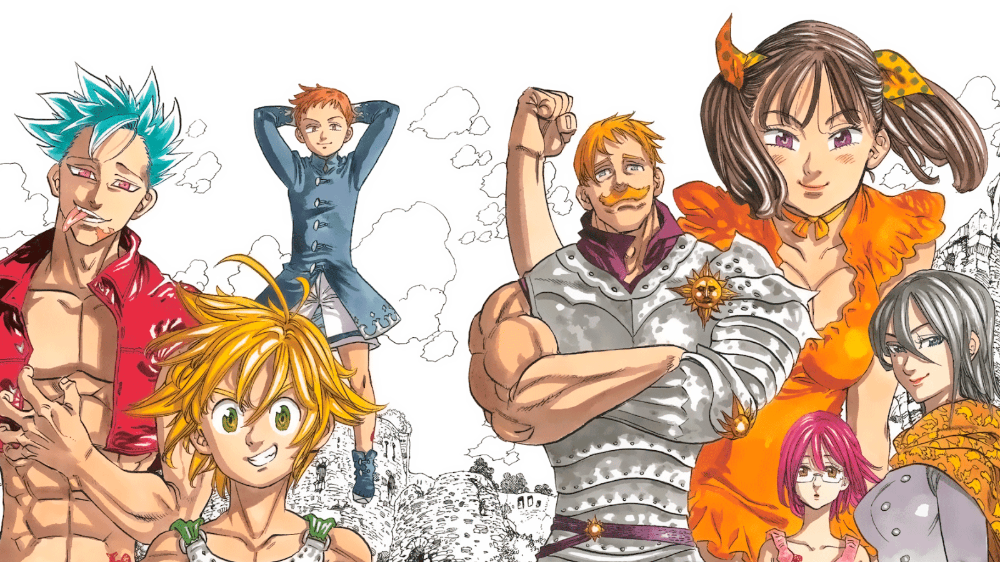
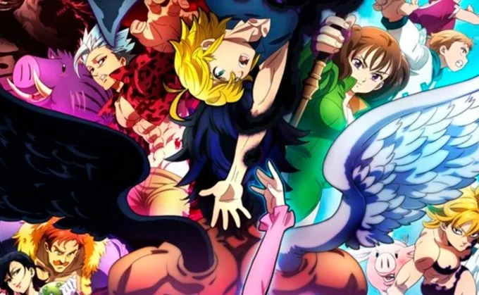
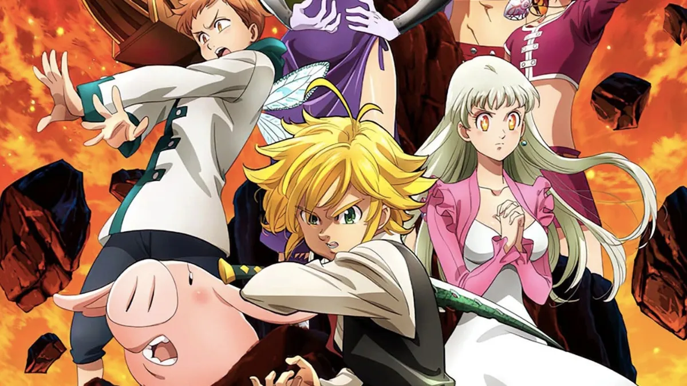

Mi anime favorito

Nanatsu no Taizai
comúnmente conocido como Los siete pecados capitales en Hispanoamérica, es un serie de manga y anime escrita e ilustrada por Nakaba Suzuki, serializada en la revista Weekly Shōnen Magazine de Kodansha desde el 10 de octubre del 2012. La trama principal se sitúa en una época medieval y sigue las aventuras del escuadrón de caballeros conocidos como los siete pecados capitales y como actúan como los protectores de Britannia de la opresión al mismo tiempo que buscan redención por pecados que les confirieron sus títulos.
Galeria





